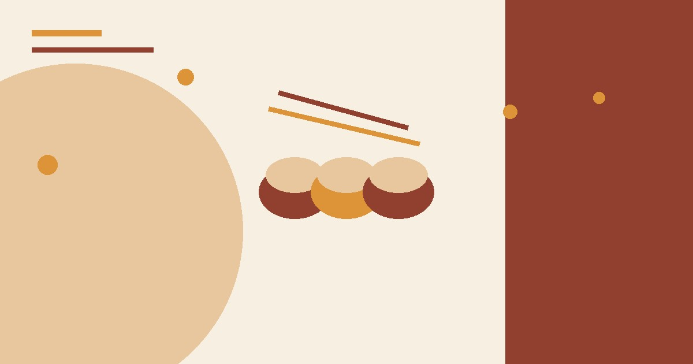

دليل الوصفات الخليجية
أرز وبهارات ومقبلات ومشروبات مع خطوات واضحة وملاحظات سلامة.
كيف تستخدم الدليل؟
- ابدأ بالمقال الأقرب لمشكلتك الحالية.
- طبّق قائمة التحقق وسجل النتيجة.
- انتقل للمقال التالي عند الحاجة بدل تغيير أشياء كثيرة دفعة واحدة.

وصفات لذيذة
دليل بهارات الأرز الخليجي: الكبسة والمندي والمجبوس
مرجع عملي يوضح الفروق العامة بين بهارات الكبسة والمندي والمجبوس وطريقة بناء خلطة متوازنة وتخزينها وتعديلها دون ادعاء وصفة واحدة أصلية.

وصفات لذيذة
كبسة الدجاج السعودية: طريقة منزلية خطوة بخطوة
طريقة منزلية واضحة لكبسة الدجاج بالأرز البسمتي: المقادير، ضبط المرق، نضج الدجاج، حل مشكلات الأرز وخيارات التقديم.

وصفات لذيذة
سمبوسك الجبن المقرمش: وصفة العجينة الذهبية
طريقة عمل سمبوسك الجبن المقرمش: عجينة ذهبية هشة، حشوة الجبن الذائب، القلي والفرن، ونصائح لتجنب التسريب.

وصفات لذيذة
عصير الليمون بالنعناع المثلج: مشروب الصيف المثالي
طريقة عمل عصير الليمون بالنعناع المثلج في البيت: مكونات بسيطة، نسبة السكر المثالية، نعناع طازج، وأفكار تقديم أنيقة للضيافة.

وصفات لذيذة
بسبوسة القشطة: حلى سهل يذوب في الفم
طريقة عمل بسبوسة بالقشطة خطوة بخطوة: المكونات، طريقة التحضير، القطر العطري، ونصائح للحصول على بسبوسة طرية ناجحة.